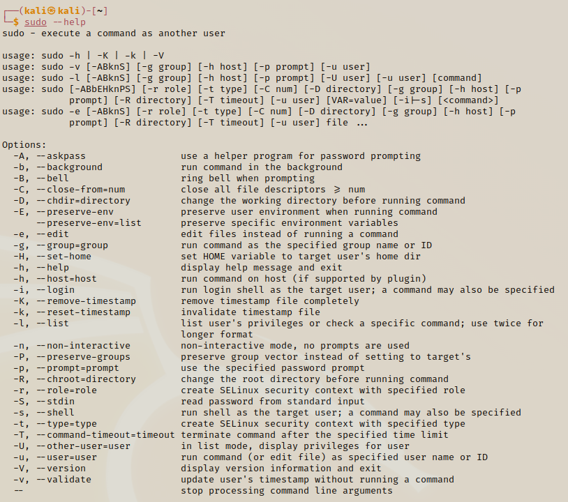

Sudo
This gives us adminstration privilages; sudo is short for super user do
sudo --help

It is not reccomended but if we wish we can swicth the user to the root.
sudo su -

We can also switch to the home directory in our within our root with just one line.
sudo su

If you cannot get access from a terminal command, try using sudo if you are not using it - the administration privillages might help it to work.
You should always execute your command without sudo unless explicitly needed.
This is the case for this course and the real world.